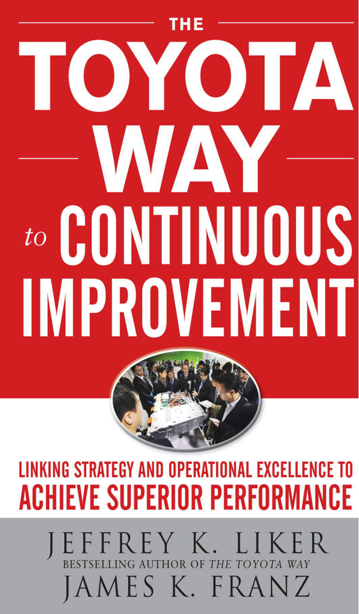
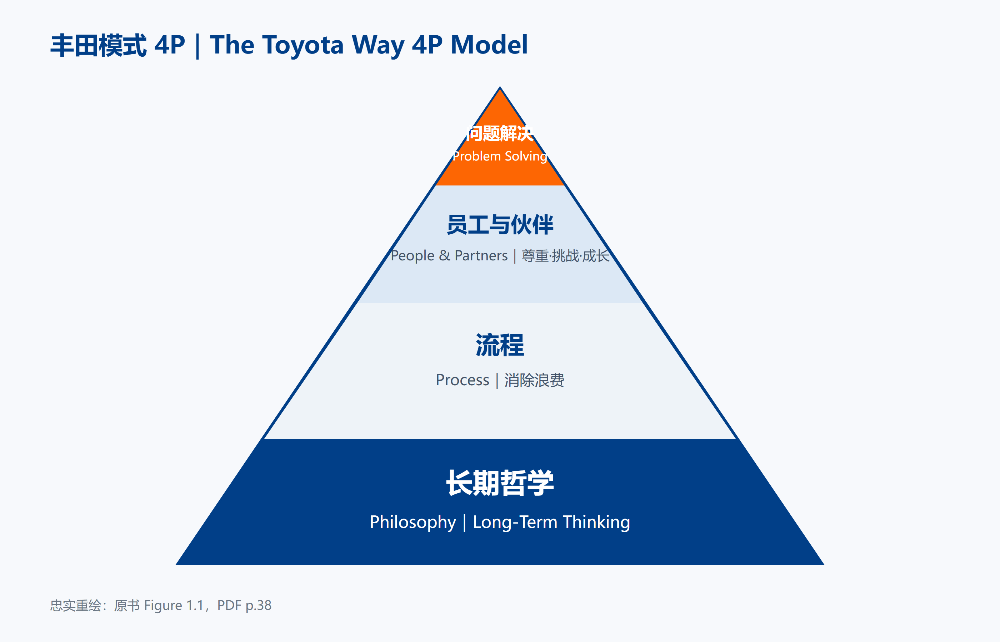
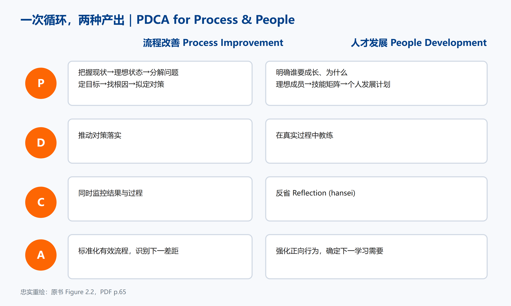
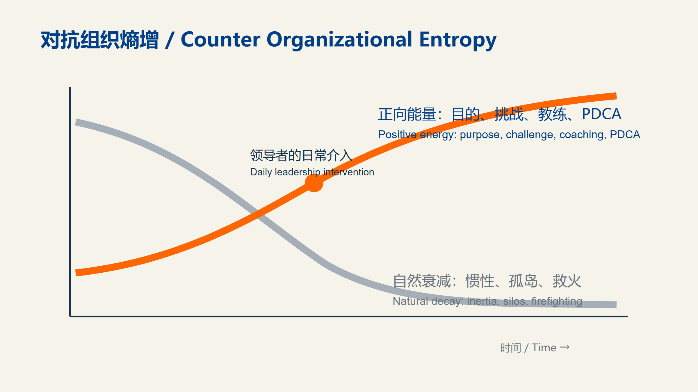
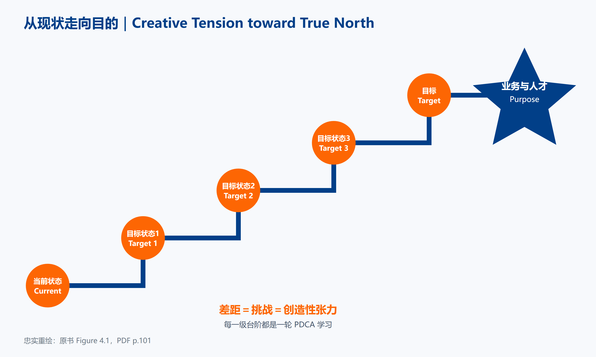

费老师拆书系列·第 6 本。把一本书读厚，再拆薄。 这一本 481 页，作者是写《丰田模式》的 Jeffrey K. Liker，专治“改善做成过，但留不住”。
为什么翻开它
费老师这些年看过太多“改善成功”：启动会上老板站台，墙上贴满价值流图，三个月后交出一张漂亮的降本清单。再过一年回去，板子还在，人已经不看了。
这几乎是所有做过改善的企业都会碰上的第二道坎。第一道坎是“做不出成绩”，靠一轮突击总能过；第二道坎是“成绩留不住”，突击就没用了——人一走，方法就跟着走了。
这本书一开篇就很不客气。Jeffrey K. Liker 和 James K. Franz 说，很多公司口头上追求卓越，实际动作却把自己带向“更便宜的平庸”。他们不缺工具，缺的是把改善当成志业，而不是当成季度项目。
书里最扎心的一个故事在西澳铁矿。团队通过现场学习连续创造了两个年度产量纪录，还成了公司维护标杆。
然后，总部换了负责人。模型线方法被另一套“广而浅”的标准审计替换，核心的那对夫妻档被调走，现场能力一点点变薄——纪录还挂在墙上，能力已经不在了。
矿山离大多数人有点远，但换个场景你立刻就懂：那个把车间盘活的车间主任跳槽了；那个天天盯板子的生产经理被调去开新厂；老板换了个思路，说今年重点是数字化。然后一切慢慢回到从前。
它提醒费老师一句话：结果只能证明你做对过，只有人和管理系统，才能证明你还会继续做对。

读厚：溯到源头
持续改善经常被翻译成“不断做小改进”。这句话没错，却太轻了。
作者把“卓越”定义成一种追求。像学琴、打球、做菜，真正的区别不是你今天排第几，而是你把它当爱好还是当一生的志业。企业也一样：并购、裁员、外包可以让报表很快变漂亮，却不等于把产品、服务和组织做得更好。
Liker 的老框架在这里仍然管用——理念、流程、人员与伙伴、解决问题四层。费老师提醒一句：大多数企业的改善只发生在第二层「流程」，第三层「人」几乎是空的。上面两层不动，下面做得再热闹也扛不住一次人事变动。

丰田模式 4P 框架（费老师中英重绘）全书的根在计划—执行—检查—调整（Plan–Do–Check–Adjust，PDCA）。但作者刻意把西方常见的 PDCA 和丰田式 PDCA 放在一张表里对照。前者想预测和控制，后者想通过尝试学习；前者由专家实施解决方案，后者由工作团队试行对策；前者把成功做法标准化复制，后者把有效部分标准化，同时继续找下一处问题。
这差别看着像措辞，其实决定了一个组织是“做完项目”，还是“长出能力”。

PDCA同时改善流程与人（中英重绘）拆开：挑三个亮点
亮点一｜每个项目必须有两种目的。
一条写业务目的：质量、成本、交付、提前期要改善什么。另一条写人才目的：谁要在这个过程中学会什么。
书中球阀维修区原来平均提前期约 175 天、在制品约 70 件、每周工作超过 60 小时。模型区改善后，加班下降 95%，吞吐量在不增员情况下提升 28%，每工时生产率提升 92%，提前期下降 60%。
只看这组数字，已经足够漂亮。但作者继续追问：谁学会了看流动？谁能带下一轮？为什么教练离开后现场又会回退？这才是第二种目的。
亮点二｜精益不是把砖墙掏空。
很多企业的精益像拿锤子敲墙：库存是一块砖，人员是一块砖，走动是一块砖。敲得越少，报表越好看。问题是，墙也越来越脆。
作者给了另一个定义：精益系统不是没有浪费的系统，而是每天让浪费变得可见、迫使人去解决的系统。组织天然会熵增。没人输入正向能量，看板会丢，标准会松，5S 会乱，指标会停止更新。
所以“怎么维持成果”这个问题本身就问歪了。你不是把成果封存起来，而是建立每天发现差距、采取行动、学习调整的节奏。

以正向改善能量对抗组织熵增（中英重绘）亮点三｜模型线的产品不是布局，是下一批老师。
复杂设备企业用 12 个月做模型线，先挑战提前期缩短 50%；深度学习大约 15 个月，扩展又用了三年。核燃料工厂从 650 多人的现场里选模型区，七年后全厂提前期下降 63%、单位成本下降 19%。
这些周期和今天流行的“两周认证、三月推广”完全不是一个量级。书里甚至说，强教练往往需要 10 年经验，丰田培养领导者也常以 10 年计。
看到这儿很多老板会劝退：我一个三十人的厂，哪等得起 12 个月？
费老师的看法正相反。这些周期长，是因为那是几百上千人的大厂——光把方法从一个车间推到另一个车间就要绕过八个部门。你的厂小，链条短，一条线就是全厂：今天定的规矩明天就能落地，教练就是你自己，学生天天在眼前。真正要算的不是“要多久”，是“这一年里有没有人真的学会了”。
书里那张“真北与目标状态”的阶梯图说的就是这件事——真北放在远处不动，中间用一级一级够得着的目标状态往上走。你不需要一年跨完，你需要的是每一级都有人学会。

真北与目标状态阶梯（费老师中英重绘）模型线不是展厅。它是一所学校：团队在真实客户压力下学习，管理者在真实差距前练习教练，然后有人能把下一条线带起来。
拆薄：搬进车间
费老师把整本书拆成四张能直接用的表。
第一张是《PDCA 控制式/学习式对照表》。开项目会时逐行对照：你在预测控制，还是在试验学习？专家在代做，还是团队在成长？
第二张是《业务情境与改变方式选择表》。企业在危机期和健康期，本来就不该用同一个节奏。危机要快速结果，同时识别未来领导者；健康期要慢一点，把基础和文化做深。
第三张是《流程改善×人才发展双轨表》。左边填问题、根因、对策，右边填理想成员、技能差距、教练动作和反思。项目不再只有一条结果线。
第四张是《标准作业审核卡》。书中原表有 11 个问题：文件在不在现场、是不是最新版本、能不能照着做、时间和关键点齐不齐、图片是否一致、员工是否训练合格……主管拿着它去现场，不是为了抓错，是为了让标准和实际重新接上。
本月就能动手：给企业的五点实战建议
① 给正在做的改善项目补一行“人才目的”。 不用重开项目。就在现有章程里加一句：这次要让谁学会哪一步。月底结案时，业务数据和能力变化一起讲。
② 把会议里的“解决方案”统一改叫“对策”。 怎么做：主持人听到“方案已经确定”，追问一句“我们准备怎样验证这项对策？”坑在于换了词却没有检查日期，那仍然是假 PDCA。
③ 选一个模型区，暂停全公司铺开。 选客户痛点清楚、负责人愿意亲自下现场的区域，连续做一个月。铁律：不拿它做参观样板，要拿它培养下一位教练。
④ 建一块最小结果板和十分钟短会。 只放目标、实际、差距、负责人、下一动作。每天同一时间站着开。别一上来买系统；书中两个医疗团队的问题，就是计划做了，30 天后一项都没动。
⑤ 让一位高管参加同一轮现场检查。 不是听汇报，而是一起看差距、问对策、参加反思。西澳铁矿的教训就在这里：现场学会了，总部没学会，领导一换，方法就被换掉。
先后顺序上，费老师建议先做①和②，把语言改对；再做③和④，让循环跑起来；⑤必须尽早约进日程，但要等现场有真实差距可看，别变成参观团。
递给你
老规矩，把这本 481 页的书拆薄，收成一张能贴墙上的单子：
- 卓越不是一个名次，是永远在前面的真北——排第几会变，方向不变，这是它能撑十年的原因；
- PDCA 不是为了控制，是为了学习——西方版想预测和控制，丰田版想通过尝试学习，一字之差，一个做完项目，一个长出能力；
- 每个项目写两条目的：一条业务的（质量、成本、交付改善什么），一条人才的（谁要学会哪一步）——只写第一条，教练一走就退回去；
- 把“解决方案”改叫“对策”——方案是拍板定的，对策是要验证的；换了词还得配上检查日期，否则仍是假 PDCA；
- 精益不是没有浪费的系统，是每天让浪费冒头的系统——别把它做成拿锤子敲墙，敲得越少墙越脆；
- 别问“怎么维持成果”，这个问题本身就问歪了——成果封不住，你要建的是每天发现差距、行动、调整的节奏；
- 模型线的产品不是漂亮现场，是下一批老师——它是学校不是展厅，不拿来接待参观；
- 组织天然熵增：没人输入正能量，看板会丢、标准会松、5S 会乱、指标会停更——日常管理的本质就是每天补这口气。
做工厂的、带团队的、搞运营的，都可借鉴哈。
想要文中四张表（PDCA 对照表 / 情境选择表 / 双轨表 / 标准作业审核卡）的朋友，公众号后台回复「改善」，费老师把空白版和完整示例版都发你——填好字段，打印出来就能用。
📚 费老师拆书·已拆 6 / 首季 12 本 ✅ 欢迎问题，收获成功 ✅ 丰田参与方程式 ✅ 创建精益文化 ✅ 日常管理 ✅ 丰田式 Dantotsu 质量改善 ✅ 丰田持续改善之道 ⬜ 丰田生产系统手册 1973 ⬜ ……
工具会旧，方法会变，真正能留下来的，是一群会用事实学习、又愿意把别人教会的人。
流水不腐，改善不止。我们下期再会。
——流动智造（FLOWSMART）× 流易数智（EASYFLOW） 费老师

相关术语：丰田生产系统 · 真北 · 目标状态 · 改善套路 · PDCA循环 · 双轨PDCA · 组织熵增 · 战略一致性
本系列：← 第005本 · 全部笔记 · 拆书台账 · 第007本 →
彩蛋：正篇讲方法，案例留给了彩蛋篇 → 第006本案例集